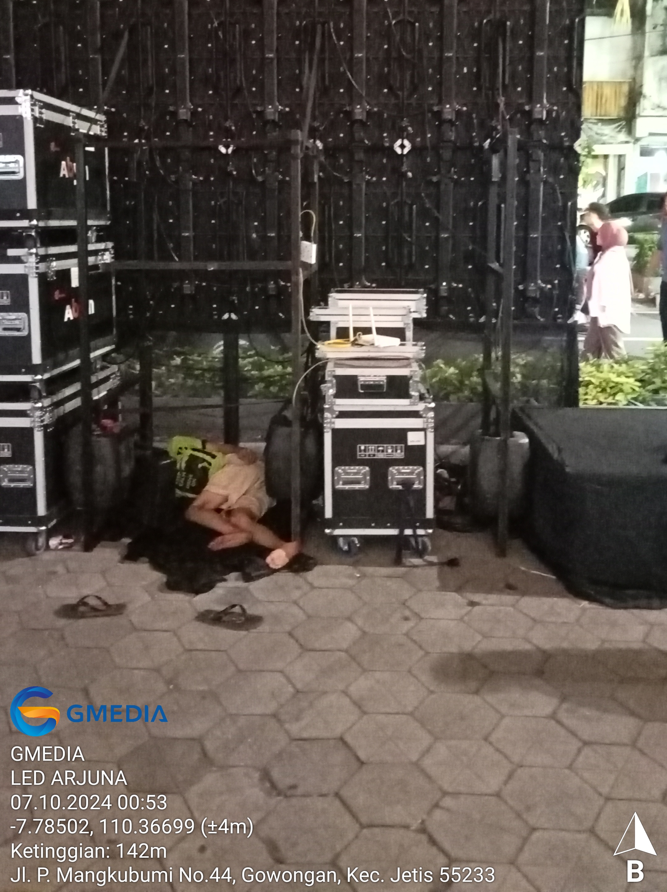
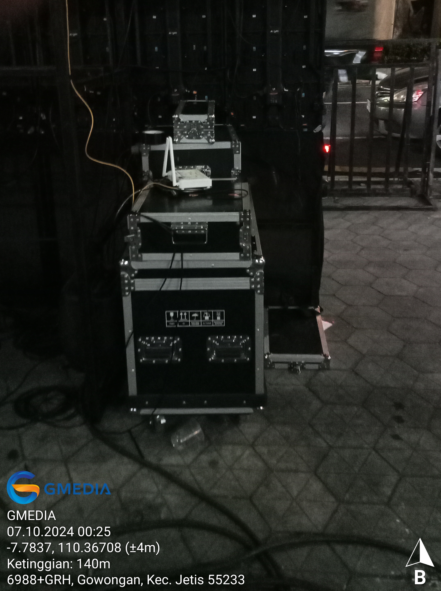
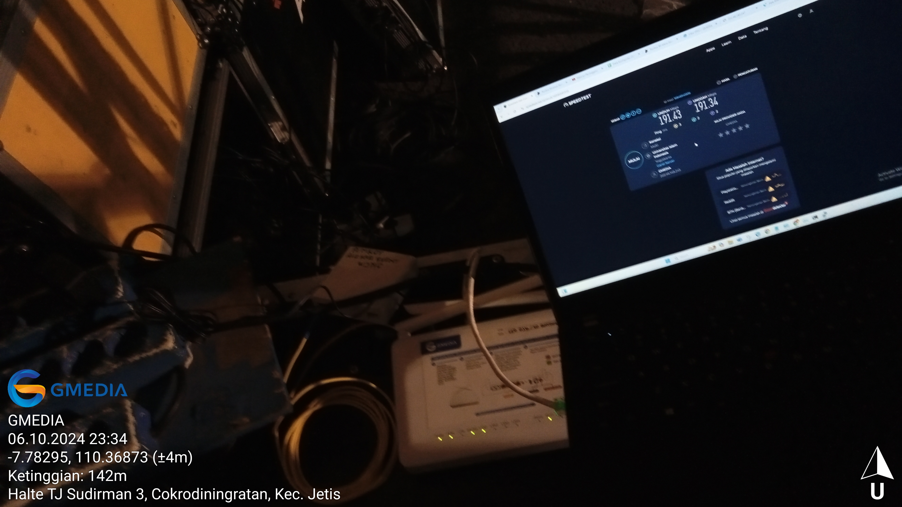
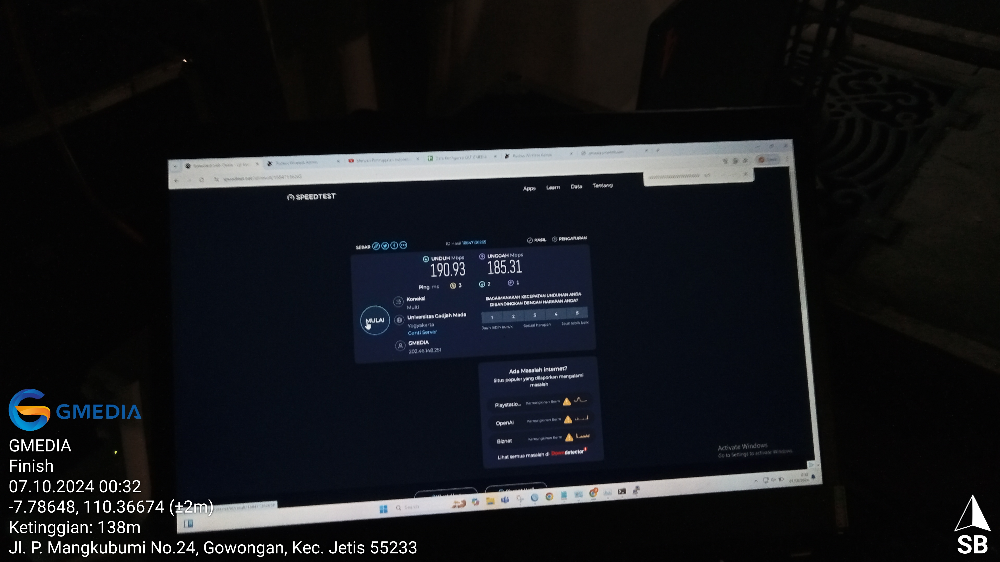

Gambaran Proyek
Wayang Jogja Night Carnival membutuhkan koneksi internet yang stabil dan andal untuk mendukung live streaming YouTube serta tampilan videotron di beberapa titik strategis selama acara berlangsung.

Proyek ini mencakup instalasi modem, konfigurasi jaringan, serta monitoring EOS (Event Operation System) untuk memastikan konektivitas berjalan tanpa gangguan di empat titik videotron utama:
- Videotron Arjuna
- Videotron Money Changer
- Videotron OJK
- Videotron Finish Line
Table of Contents
Ruang Lingkup Deployment
- Event: Wayang Jogja Night Carnival
- Perangkat Terpasang:
- Modem di empat lokasi utama
- Sistem monitoring EOS
- Tujuan Konektivitas:
- Live streaming YouTube
- Konten tampilan videotron
- Monitoring: Pengawasan penuh terhadap koneksi selama acara berlangsung
- Koordinasi Tim: Bekerja sama dengan Tim Event WJNC dan Tim NOC untuk deployment dan troubleshooting secara real-time
| Lokasi | Dokumentasi |
|---|---|
| Videotron Arjuna |  |

|
|
| Videotron Money Changer |  |

|
|
| Videotron OJK |  |

|
|
| Videotron Finish Line |

|
|  |
{kind=link}
{kind=link}
{kind=link}
{kind=link}
Tanggung Jawab
- Instalasi Modem: Melakukan pemasangan dan aktivasi modem di setiap titik yang telah ditentukan.
- Monitoring EOS: Memantau performa internet, stabilitas koneksi, dan kualitas live streaming selama acara berlangsung.
- Validasi Konektivitas: Memastikan seluruh videotron dan sistem live streaming beroperasi tanpa gangguan.
Detail Implementasi
Instalasi Fisik
- Melakukan pemasangan modem di empat titik sesuai layout event.
- Memastikan suplai daya dan kabel jaringan terpasang dengan aman dan rapi.
Konfigurasi Jaringan
- Mengaktifkan modem dan memverifikasi koneksi internet menggunakan PPPoE Client di masing-masing lokasi.
- Mengonfigurasi jaringan LAN untuk videotron, perangkat kru, dan sistem monitoring EOS.
- Memastikan konfigurasi IP address, gateway, dan DNS berjalan dengan benar.
- Mengatur EOS monitoring untuk memantau stabilitas internet dan performa jaringan secara real-time.
- Memverifikasi komunikasi antar perangkat videotron dan sistem live streaming berjalan normal.
Monitoring Selama Event
- Melakukan pemantauan live streaming dan videotron secara kontinu.
- Merespons cepat setiap notifikasi atau gangguan konektivitas untuk menjaga kelancaran acara.
Tools & Teknologi
- Modem (4 unit)
- Sistem Monitoring EOS
- Ping Monitoring Tools untuk pengecekan konektivitas real-time
- Cacti untuk monitoring bandwidth dan penggunaan jaringan
- Kabel Ethernet dan power untuk seluruh perangkat
- Infrastruktur live streaming YouTube
Analisis Jaringan
- Reliabilitas: Koneksi stabil memastikan live streaming berjalan tanpa gangguan.
- Cakupan: Empat titik utama terhubung dan beroperasi optimal.
- Efisiensi Operasional: Monitoring EOS memungkinkan penanganan masalah secara proaktif.
Hasil Akhir
- Berhasil menyediakan koneksi internet yang stabil untuk live streaming dan videotron selama acara.
- Mencapai zero downtime sepanjang event berlangsung.
- Menunjukkan pengalaman langsung dalam event networking, instalasi modem, dan monitoring jaringan real-time.